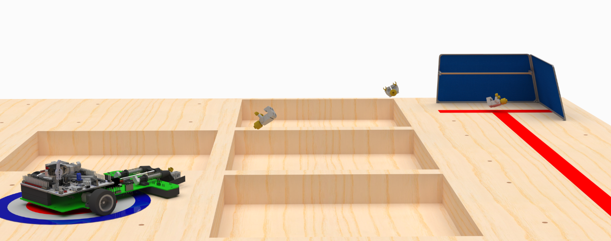
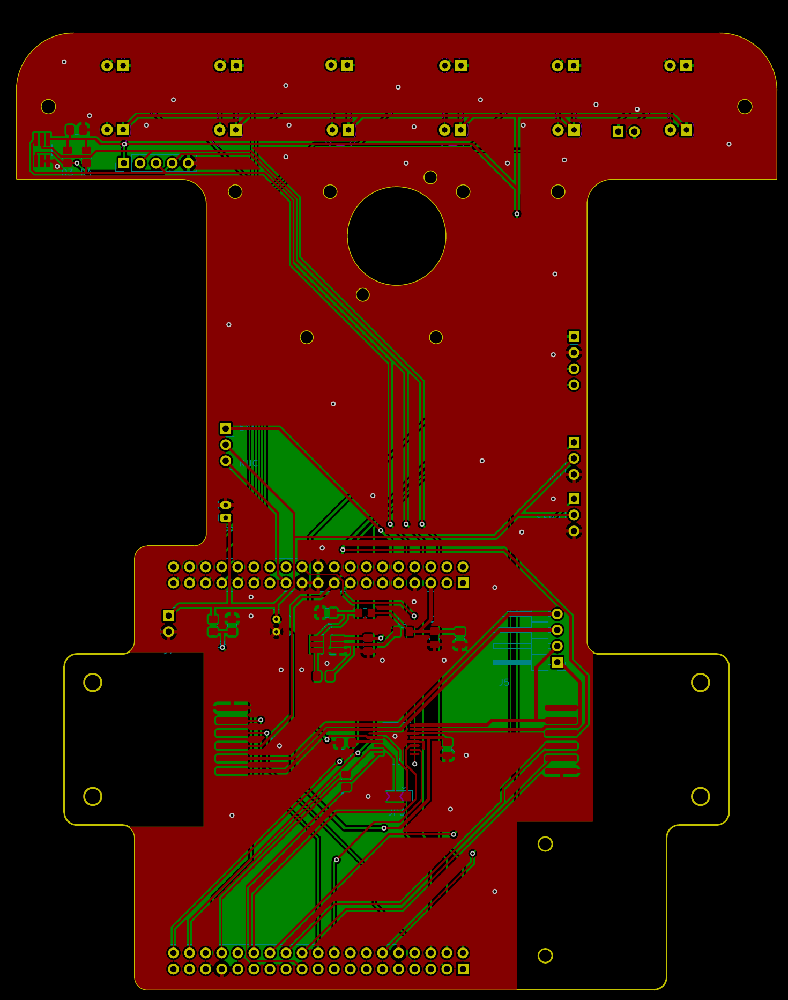
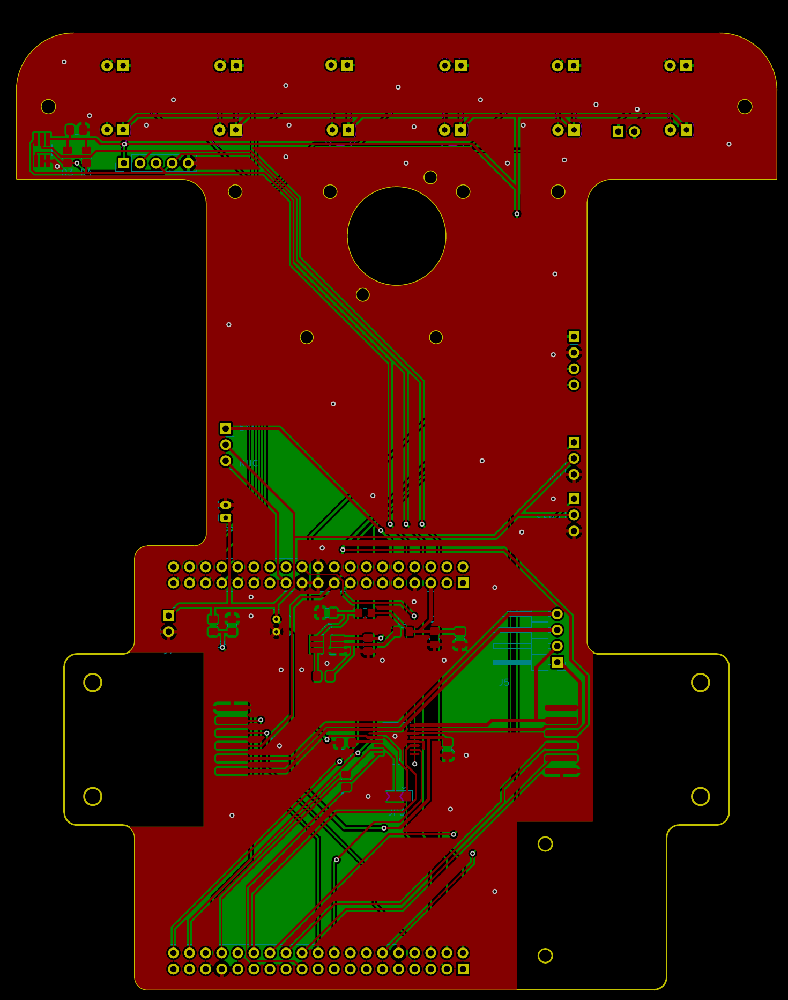

Line Following Robot
2024-04-29

Overview
In the third year of university, we have a design project course that lets us build a physical project that competes with some given task. For my year, the task is to build a robot that "rescues" a LEGO figure from the center of the course and put it in one of the safe zones (green boxes or the start). The course has a line marked by red tape that the robot must follow.
The performance of the robot is evaluated based on its mass, time to completion, and reliability. After some brain storming and a lot of loophole probing with the TA, we settled on the solution: drive the robot to the center of the course as fast as possible following the line, then kick it straight back to the start where a net would be left behind. Josh from my group has a writeup with more complete rules and design process. This blog will focus on the electrical and firmware aspect of the project.
Line Detection
In order for the robot to follow the line, it must know where the line is. It was known since the beginning that infrared detector does not work well with the red tape used to mark the line. So the traditional infrared sensor used by most line following robot were not suitable for this project.
One idea I had that I thought would be interesting was to modify a barcode scanner as it was designed to detect lines at a distance. If it worked, it would've allowed us to look really far ahead the robot to give it more time to react to upcoming turns and stops. However there were numerous issues:
- Traditional (non-camera based) barcode scanner still uses infrared laser
- Swapping out the infrared laser for a green laser diode from eBay means the existing infrared filter in the scanner no longer works
- Even if a different filter was found, using laser in the visible spectrum would be heavily affected by environmental lighting
- The mirror used to create the scan line was sensitive to physical movement, which would make calibration challenging if not impossible
- The natural frequency of the mirror was 40Hz. This means even at a moderate 3m/s speed the interval between scans would be at 7.5cm! This makes it basically impossible to control at any competitive speed

Barcode Scanner Test
The other approach we tested was using 6 pairs of photoresistors and blue LEDs to form an array. This worked pretty well with just a simple resistor divider circuit and probably would've given us similar performance. But eventually we found this VTP9812FH photodiode with a built in IR-rejection filter that could block out most light reflected from the red tape. Combined with some 2N3904 transistors I had on hand and some green LEDs, it was giving us pretty good distinction between the wood floor and red tape at a fast rate.
Photodiode Array Prototype and Spectral Response from Datasheet
Motor and Encoder
For motors, we used two Micro Metal Gearmotors from Pololu. These motors are very small and lightweight while providing good speed and power. With a 30:1 gear box, the robot was able to follow the line with ~70% average PWM at the end of the project. The motors were rated for 6V, which we ran at 8V straight from 2S LiPO. As a result, a few motors did burn out through the project. Although it was enough to carry the robot through the final competition, I do wish that we didn't have to deal with it in retrospect. If something has a spec, better follow it.
From testing with the motors, there were some issues that makes it hard to create a line-following control loop:
- The relationship between PWM and motor speed was highly non-linear
- Stiction in the motor and gearbox makes open-loop speed control only usable between ~60%-100% PWM
- The open-loop motor speed is further impacted by the varying voltage level as the battery discharges
To make things easier for us, we got some 5-tooth optical encoders from Pololu. With the addition, it solves the above problems by allowing the firmware to control the motors speed precisely from 0 to full speed. It also proved to be very useful when we ended up relying on odometry later.
Motors and Encoder
Battery
Since mass is one of the factors in the scoring, choosing a light weight battery that's just big enough is really important. Initially we estimated an current draw of 2A for 5 minutes of operation, resulting in a required battery capacity of 167mAh. The smallest 2S LiPO battery we found at the time were some 350mAh battery packs. Being oversized means that we were able to test the robot over multiple runs during development without changing the battery which was nice. Eventually we wanted to optimize the mass more, and we realized we could use single 1S cells at 100mAh in series to power the robot for just a few runs. This switch reduced the battery mass from 5g.

Big and Small Batteries
Prototype
We had a prototype robot that we used to test all the different components. The chasis was made out of a single waterjet acrylic board that we could bolt the different components to. This for example let me swap between photoresistor and photodiode arrays and compare them fairly quickly and identify any potential integration issues.
Test with Photoresistor

Test with Photodiode
One thing that I discovered when testing with the prototype robot was that the photodiode reading was sensitive to the environment lighting. Red tape and wooden floor reading from a dark environment was significantly different than a bright environment. A 3D printed shroud around the photodiode array fixed that.
PCB Chassis
For the final product, I designed a PCB board that consolidates motor driver, photodiode array, interconnects with the microcontroller, and robot chassis into a single part. It contains
- 5V DC-DC switching supply
- Battery connector and voltage monitor
- TC78H660FNG motor driver
- TMAG5273 3D hall effect sensor (which was replaced by HMC5883L later, and eventually dropped from the final product)
- Headers to plug a Nucleo F401RE dev board into
- 2x servo headers
- Photodiode and led array, amplified with MMBT3904 transistors (which are SMT version of 2N3904 previously tested)
- Solder pads for motor encoders
- Serial UART connector compatible with HC-06 Bluetooth module
 
There were some potentials of mass and space optimization if we incorporated a microcontroller directly onto the PCB. But there were some advantages for using the existing Nucleo dev boards:
- The STM32F401RE used was a very capable controller, with many hardware timers that could
- Output PWM signal for each motors and servos individually
- Handle quadrature encoder decoding in hardware
- Nucleo having a built-in programmer makes development really easy
- Incorporating an equivalent STM32 microcontroller on the custom PCB would required the same amount of supporting hardware anyways
- With a 2-deck circuit board structure near the rear of the robot, it shifted the center of mass towards the wheels, which was desirable for both acceleration and turns
- The school lends us Nucleo dev board for free, so it saved us some money
We could also have cut the unused headers and made the programmer removable on the Nucleo to save more weight, but the dev board was actually borrowed so we didn't modify it in the end.
The TC78H660FNG is a double channel H-bridge driver, capable of driving 2A from a TSSOP16 package. In the design, its MODE pin was connected to the Nucleo for the flexibility of being able to change the operating mode in firmware. But it turns out the MODE selection needs to happen at power on and can not be changed once powered. So in the actual hardware it is tied to 5V rail with a jumper wire.
An external DC-DC buck converter was used to supply the 5V rail used by the LED array. Although a jumper was available to fall back to Nucleo's on board regulator if it failed for whatever reason.
The design of Pololu's motor encoder had its connection points perfectly sit flat when the motor was installed. This allowed the motor to be directly soldered to the PCB chasis without any wire, and we did not have to worry about wire connection coming lose over time. The solder blobs could interfere with the optical teeth if they were too big, but it was easily fixed by removing excess solder. The distance between the disk and the optical sensor was a bit tricky to get right. But once it was setup it was working pretty well.


Soldered-on Motor and Overall Assembly
UART Bluetooth and Command Interface
The PCB chassis includes a header that is compatible with the 4-pin HC-06 Bluetooth module. To make the Bluetooth UART work alongside with USB UART on Nucleo, solder bridge SB14 was disconnected and SB62 connected. This way USB communication could still be used by removing the Bluetooth module and connecting the TX pin of CN1 to the RX pin of the headers. Having a wireless communication with the robot turned out to be very useful. I could send out commands to move the robot, getting feedbacks, and tuning various parameters while the robot was running along the course.
To fully utilize the wireless programming capability, I created a command interface in the firmware. It includes commands such as
- Robot movements such as starting the course, stopping, moving a fixed speed, turn by some angle, actuating servos
- Starting compass calibration sequence or saving current sensor values as red tape or blank wood readings
- Debug commands such as setting the state of its state machine and enabling data streaming mode, and querying battery voltage
- Configuration register: setting/getting the value of a specific register and saving/loading it to the non-volatile storage
The configuration register was one of the most useful feature in the firmware. Every aspect of the control loop, from input normalization, PID gains to target detection thresholds used the values from the registers. For example if I wanted to change the base motor speed for the robot, I could simply type set speed 0.5 over the Bluetooth serial console and had it take affect immediately. Without it, I would have needed to stop the robot, retrieve it, and reflash it. Since the changes only resides in RAM unless explicitly saved, I could also play around with the parameters and roll back to the last good values easily.
Compass and Odometry Aiming
Spoiler: compass wasn't very useful and odometry rules.
Since the method we used to transport the LEGO figure was to kick it back to the start, accurate aiming was a crucial problem that needed solving. Initially the idea was to use a magnetometer to get an absolute heading, and rotate the robot based on its reading. However, the TMAG5273 sensor turned out to be the wrong chip for the job - it was designed to sense magnetic encoder and was not sensitive enough for Earth's magnetic field. Luckily I had a fallback connector on the robot to solder on a HMC5883L breakout module, which was designed for use as a compass. Initial testing using a simple min-max normalization calibration did not give us enough accuracy however.
Heading Lock Test using Min-Max Normalization
To try to improve the magnetometer accuracy, I found this paper that uses least-squares fit on an ellipsoid for magnetometer calibration. The paper shows a few methods for calibrating 3D magnetic field measurement, I adopted the first method for both soft and hard iron calibration into a 2D case, as the robot only rotates around a single axis. Note that the equation for in the paper is wrong, it should be according to its citation [1, eq. (5)] from Markovsky, et al. For more, we can reduce equation (3) to , where and . The modified and do not actually affect the final result as the common factor would end up getting cancelled. This reduces the number of regressors by 1. My version of the algorithm using easyMatrix library is as followed:
- Populate calibration data with a series of magnetometer measurements in quadratic form
- Perform least-square regression on the data, utilizing LU decomposition
- Compute hard-iron offset
- Compute inverse soft-iron matrix
To apply the calibration, subtract away the hard-iron offset and multiply the soft-iron matrix
To gather calibration data, a sequence was programmed in the robot that turns to 8 different angle and measure the average magnetometer reading at each angle. This sequence could be started using the command interface above. You would think with all these work, the robot will finally be able to aim towards a precise direction, right?
Surprise! After learning a whole new math construct and running the calibration sequence, the robot's aiming was still terrible on the course. It turns out the course was assembled with iron screws for each tile, with the entire thing rested on a steel cabinet. The magnetic field throughout the course was completely non-uniform. It was basically impossible to extract the absolute direction from the magnetometer…
As sad as it was, a new discovery was made anyways. While the magnetic field failed me, the odometry based aiming used for the calibration sequence actually worked really well. With some tuning of wheel distance, I was able to have to turn some multiples of 360° without much deviation from the starting angle. So, as long as the angle of our final approach to the LEGO figure was repeatable, we would be able to get a very precise aiming based on odometry alone.
Robot Firmware
STM32F401RE was a pretty good microcontroller for robot cars. On top of the relative high clock speed and plenty flash space, its 11 timers was crucial. In the end 9 of the 11 timers were used for quadrature decoding, motor control, servo control, main loop time keeping, and tone generation (for playing music!). In particular, having hardware support for quadrature decoding was indispensable for accurate wheel rotation sensing at high speed. One of the timer was used to keep the main loop running at 1kHz, this way the control system behaviour remains the same as features were added and removed from the firmware.
The high level behaviour of the robot was managed by a state machine, it made it really easy to program predefined sequences (like aiming and shooting) together with the more dynamic line-following stage. I did spend some time to find the right condition to transition from line-following to the aiming sequence. With the 6 sensor inputs, the combination of their variance, mean, and the distance travelled was the most reliable to detect the target pattern. If the threshold was too high, the robot would start following the target before stopping, making the end position inconsistent; if the threshold was too low, there would be false detection mid course. The detection was also sensitive to the speed of the robot, good thing that with encoders its speed could be really consistent regardless of battery voltage.
Each wheel is controlled by their own PID controller. The dynamic system from PWM duty cycle to wheel speed was a simple 1st order system so making a simulation for it seemed overkill. Instead I spent even more time to build a GUI to tune and display the closed-loop response in real time using the UART interface. As extra as it was, it was a pretty useful tool for tuning the PID parameters for the wheel speed controller.

Wheel Speed Controller Tuning Interface
The line-following controller gets its input from the 6 sensors using a weighted sum. After a lot of tuning (aka changing every parameters randomly until things work), a linear weight of -5, -3, -1, 1, 3, 5 from left to right seems to have worked well. A PID controller acts on this sum as input and produces the desired speed differential between the two wheels. This differential is then added to a configurable base speed to feed into the wheel controllers. Ethan from our group made a really nice jig that lets us tune the controller statically.
Line Following Tuning Jig
set points
End Result
In the end, we successfully completed 3 runs, with the best time of 8.04s and a mass of 178.4g which got us the 1st place without any doubt.
Extra: Music
Apparently I have too much time when working on this project. So one day when I was bored writing code I found miditones that converts a midi file into a simple byte sequence that can be parsed easily into play note, stop, and pause commands. Using the direction pin on the motor driver and a STM32 timer I can embed encoded midi files in the robot and play it. It even uses the servo as percussion!